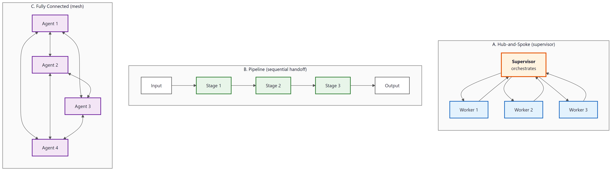
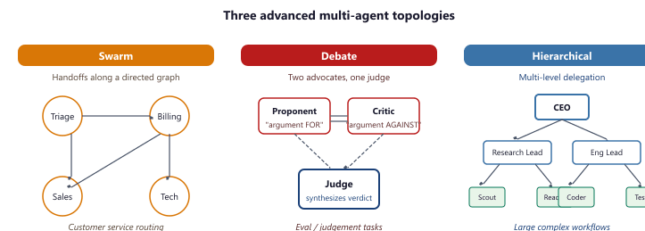

"One agent solves a problem. Two agents solve it differently. Three agents schedule a meeting to discuss the problem."
Census, Hierarchically Orchestrated AI Agent
The topology of your multi-agent system determines its reliability, latency, and failure modes. Six architecture patterns have emerged as practical for production: supervisor, pipeline, mesh, swarm, hierarchical, and debate. Each pattern defines how agents are organized, how work flows between them, and how decisions are made. Choosing the wrong pattern leads to cascading failures, runaway costs, or agents that talk past each other. This section covers each pattern with concrete examples, tradeoff analysis, and guidance on when to use (and avoid) each one. The AI agent from Chapter 26 is the building block; this section shows how to compose multiple loops into a coherent system.
Prerequisites
This section builds on tool use and protocols from Chapter 27 and agent foundations from Chapter 26.

(A) Hub-and-Spoke: a central Supervisor box orchestrates three Worker agents around it, with bidirectional arrows between supervisor and each worker. (B) Pipeline: an Input feeds Stage 1, then Stage 2, then Stage 3, then Output in a sequential left-to-right flow with single-direction arrows. (C) Fully Connected mesh: four Agent boxes, each connected to every other agent with bidirectional arrows, totalling six edges.28.2.1 Foundational Patterns
Conway's Law ("organizations design systems that mirror their communication structure") was published by Mel Conway in 1968 in a paper rejected by the Harvard Business Review. The paper found a home in Datamation magazine; Fred Brooks cited it in 1975's Mythical Man-Month and made it famous. Multi-agent systems in 2026 routinely re-derive Conway's Law every time a team splits an agent that should have been kept whole.
Multi-agent decomposition only beats a single agent when the bandwidth between sub-problems is lower than the capacity cost of holding both in context. If sub-agents need to share most of their reasoning, the inter-agent message-passing serializes what a single agent would do in parallel attention, and you lose. This is the Conway's-law cousin of microservices: distributing a system pays off only when interfaces are narrower than internals. Multi-agent debate, planner/executor splits, and tool-specialized agents are all instances of this; LLM-routing-to-LLM (where each agent solves a similar but slightly different problem) usually is not.
Topology decides how agents are organized, how work flows between them, and how decisions land. The pick drives reliability, latency, cost, and the class of tasks the system can even attempt. Six patterns dominate production work: supervisor, pipeline, mesh, swarm, hierarchical, and debate.
The supervisor pattern places a single orchestrating agent in charge. The supervisor receives tasks, decides which specialist agent should handle each subtask, routes work accordingly, and synthesizes results. This is the most common pattern in production because it provides a clear control point for monitoring, cost management, and error handling. The supervisor's routing logic can be as simple as a classification prompt or as complex as a planning agent with its own tool set.
The pipeline pattern arranges agents in a linear sequence where each agent transforms the output of the previous one. A content generation pipeline might flow through Research Agent, Outline Agent, Draft Agent, Edit Agent, and Fact-Check Agent. Pipelines are simple to understand and debug because the data flow is predictable. They work well when the task naturally decomposes into sequential stages with well-defined inputs and outputs.
Most production multi-agent systems use the supervisor pattern as the top level, with pipelines or meshes within specific subtask flows. A customer service system might have a supervisor that routes tickets to specialist agents, where each specialist runs a pipeline (understand, retrieve, draft, review) internally. This layered approach combines the routing intelligence of a supervisor with the structured execution of a pipeline.
Multi-agent coordination is fundamentally harder than single-agent design, and the difficulty grows non-linearly. A single agent has one context window, one reasoning chain, and one execution path. Adding a second agent introduces communication (what information to share and in what format), synchronization (when to wait for results vs. proceed independently), and conflict resolution (what happens when agents disagree). With N agents, potential interaction patterns grow combinatorially. This is not just an engineering inconvenience; it mirrors the fundamental coordination costs in distributed systems and human organizations. Brooks's Law ("adding people to a late project makes it later") applies to agents too. Start with the fewest agents possible and add more only when a single agent demonstrably cannot handle the task's diversity or throughput requirements. The rest of this section catalogues the patterns that manage these coordination challenges.
The coordination challenges of multi-agent systems are a computational manifestation of problems studied in organizational theory and microeconomics. Ronald Coase's theory of the firm (1937) asks why organizations exist at all rather than relying on market transactions between independent actors. His answer, transaction costs, applies directly to multi-agent systems: the overhead of coordinating separate agents (communication, context sharing, conflict resolution) is the "transaction cost" of the multi-agent approach. When these costs exceed the benefits of specialization, a single monolithic agent is more efficient, just as a firm integrates operations rather than outsourcing them. Conversely, when tasks are highly modular with clean interfaces, the multi-agent approach wins for the same reason that markets outperform central planning in economics: distributed agents can specialize and operate in parallel. The supervisor pattern is essentially a management hierarchy; the mesh pattern is a market; and the debate pattern is an adversarial proceeding. Each topology trades off coordination costs against the benefits of specialization differently.
Microsoft AutoGen v0.4 (the autogen-agentchat package, released late 2024) rewrites the framework around an asyncio event bus. Agents are AssistantAgent objects that subscribe to messages, and teams like RoundRobinGroupChat or SelectorGroupChat orchestrate turn-taking with a termination condition. The result is a cleaner mental model than v0.2 plus first-class streaming and human-in-the-loop nodes.
Show code
pip install -U autogen-agentchat autogen-ext[openai]
import asyncio
from autogen_agentchat.agents import AssistantAgent
from autogen_agentchat.teams import RoundRobinGroupChat
from autogen_agentchat.conditions import MaxMessageTermination
from autogen_ext.models.openai import OpenAIChatCompletionClient
async def main():
client = OpenAIChatCompletionClient(model="gpt-4o")
a = AssistantAgent("planner", model_client=client, system_message="Plan steps.")
b = AssistantAgent("solver", model_client=client, system_message="Execute steps.")
team = RoundRobinGroupChat([a, b], termination_condition=MaxMessageTermination(6))
await team.run(task="Estimate the energy cost of training Llama-3 70B.")
asyncio.run(main())28.2.2 Advanced Topologies
The mesh pattern connects agents in a peer-to-peer network where any agent can communicate with any other. This is the most flexible topology but also the hardest to debug and monitor. Mesh patterns emerge naturally in systems where agents need to negotiate or share information bidirectionally. The A2A protocol discussed in Section 27.3 provides a standard for mesh communication.
The swarm pattern (popularized by OpenAI's Swarm framework) uses lightweight agents that hand off tasks to each other through a simple transfer mechanism. Each agent in the swarm has a focused role and a set of handoff targets. When an agent determines that the task needs a different capability, it transfers the conversation to the appropriate agent. This pattern is particularly effective for customer service scenarios where different query types require different specialist knowledge.
The debate pattern assigns agents opposing roles and has them argue toward a conclusion. One agent advocates for a position, another challenges it, and a judge synthesizes the best arguments into a final answer. Research shows that debate produces higher-quality outputs for tasks involving judgment, evaluation, and analysis. The key risk is sycophantic convergence, where agents agree with each other too readily rather than maintaining genuinely opposing perspectives.

Each topology has named production deployments. Swarm: OpenAI shipped the Swarm framework in October 2024 as the reference for handoff-based customer-service routing; several Zendesk and Intercom partners use it for triage. Hierarchical (orchestrator-worker): Anthropic's "Claude as a research lead" pattern, published in their multi-agent post (April 2025), uses a top Claude that spawns subagents for parallel literature searches, file reads, and writeup; it now powers Claude Research and the Computer Use research-mode pipeline. Debate: Constitutional AI training at Anthropic and Google DeepMind's Society of Mind paper (Du et al., 2023) both use it; in production it shows up in LMSYS Chatbot Arena's pairwise grader and in adversarial red-team pipelines.
The supervisor (hub-and-spoke) pattern as a multi-round dispatch loop. At each round the LLM-router consumes the task and the running result list, decides which specialist agent to call (or signals DONE), executes that agent, and appends its output. The loop is bounded by R rounds to prevent runaway costs.
Input: task T, specialist agents {A1, ..., An} with descriptions, LLM M, max rounds R
Output: synthesized result
1. Initialize results = []
2. for round = 1 to R:
a. route = M("Given task T and results so far, select next agent or DONE")
b. if route == DONE:
break
c. agent = lookup(route, {A1, ..., An})
d. subtask = M("Extract the subtask for agent from T and context")
e. result = agent.execute(subtask)
f. results.append((agent, result))
3. final = M("Synthesize results into final answer for T")
return final# Supervisor pattern with LangGraph
from langgraph.graph import StateGraph, END
def supervisor(state):
"""Route the task to the appropriate specialist."""
response = llm.invoke(
f"Classify this task and route to the best specialist:\n"
f"Task: {state['task']}\n"
f"Available specialists: research, coding, writing, analysis\n"
f"Respond with just the specialist name."
)
return {"next_agent": response.content.strip().lower()}
def route(state):
return state["next_agent"]
graph = StateGraph(AgentState)
graph.add_node("supervisor", supervisor)
graph.add_node("research", research_agent)
graph.add_node("coding", coding_agent)
graph.add_node("writing", writing_agent)
graph.add_node("analysis", analysis_agent)
graph.add_node("synthesize", synthesize_results)
graph.set_entry_point("supervisor")
graph.add_conditional_edges("supervisor", route, {
"research": "research",
"coding": "coding",
"writing": "writing",
"analysis": "analysis",
})
for agent in ["research", "coding", "writing", "analysis"]:
graph.add_edge(agent, "synthesize")
graph.add_edge("synthesize", END)The same supervisor pattern in 12 lines with CrewAI (pip install crewai):
Show code
from crewai import Agent, Task, Crew, Process
supervisor = Agent(role="Supervisor", goal="Route tasks to specialists")
researcher = Agent(role="Research Analyst", goal="Find information")
coder = Agent(role="Software Engineer", goal="Write code solutions")
writer = Agent(role="Technical Writer", goal="Produce clear reports")
task = Task(
description="Research quantum computing advances and write a summary",
agent=supervisor,
expected_output="A researched summary report",
)
crew = Crew(
agents=[supervisor, researcher, coder, writer],
tasks=[task],
process=Process.hierarchical,
manager_agent=supervisor,
)
result = crew.kickoff()CrewAI.28.2.3 Pattern Selection Criteria
Selecting the right architecture pattern depends on several factors. Task decomposability: can the task be broken into independent subtasks (favors supervisor or mesh) or sequential stages (favors pipeline)? Quality requirements: does the output need adversarial review (favors debate) or is a single pass sufficient? Latency budget: sequential patterns add latency proportional to the number of stages; parallel patterns trade latency for cost. Debuggability: simpler topologies (pipeline, supervisor) are easier to trace and debug than meshes or swarms.
The multi-agent reinforcement learning literature has a clean quantitative argument for why LLM multi-agent systems almost always use decentralized topologies rather than a single super-supervisor that picks every agent's action. The MARL loop is: each of $N$ agents emits an action from its local action space $A$, a joint-action operator combines them into a single environment input, and the environment returns per-agent rewards and observations. A centralized controller that picks the joint action directly must search the product space $|A|^N$. With three agents and six actions each, that is $6^3 = 216$ joint actions per step; with 10 agents it is $6^{10} \approx 6 \times 10^7$. Decentralizing into $N$ independent agents that each search their own $|A|$-sized action space replaces the exponential with a linear cost, at the price of having to learn (or prompt) coordination without a global controller. The same combinatorial-explosion argument explains why supervisor + worker LLM topologies dominate flat "council of agents" designs: a supervisor that has to enumerate every possible $(\text{worker}_1\text{ action}, \ldots, \text{worker}_N\text{ action})$ tuple in its context cannot scale past three or four workers, while a supervisor that just routes one subtask at a time per worker scales linearly. References: Stone, P. and Veloso, M. (2000). "Multiagent Systems: A Survey from a Machine Learning Perspective." Autonomous Robots; Albrecht, S., Christianos, F., and Schäfer, L. (2024). Multi-Agent Reinforcement Learning: Foundations and Modern Approaches, MIT Press.
| MARL dimension | Question for an LLM team | Typical LLM choice | Concrete example |
|---|---|---|---|
| Size | How many agents and how big is each action space? | Small (2-7); per-agent action = one tool call | Supervisor + 4 specialist workers (research, draft, edit, fact-check) |
| Knowledge | What does each agent know about the others' goals and tools? | Full common knowledge (shared system prompt) | Each agent sees the team objective and the full tool catalogue |
| Observability | Does every agent see the full conversation history? | Partial (workers see only their handoff message) | Pipeline stages each receive the prior stage's output, not the full thread |
| Rewards | Cooperative (shared reward), competitive (zero-sum), or mixed? | Cooperative for supervisor/pipeline; mixed for debate | Autonomous-driving-style mixed motive: shared "avoid collisions" + per-agent "drive efficiently" |
| Objective | Optimize task success, time, cost, or all three? | Weighted sum, with cost as a hard cap | "Best answer within $0.50 of API spend per query" |
| Centralization | One coordinator or fully decentralized handoffs? | Centralized for simple flows; hierarchical when one supervisor overflows | Anthropic's research-lead pattern: one Claude spawns 4 subagents in parallel |
| Criterion | Supervisor | Pipeline | Mesh | Swarm | Debate | Hierarchical |
|---|---|---|---|---|---|---|
| Task structure | Branching | Linear | Negotiation | Categorical | Judgement | Nested |
| Latency | Low (parallel) | Medium (sum of stages) | High | Low | High (multi-round) | Medium |
| Cost | Low | Low | High (O(N²) msgs) | Low | High (2-3x) | Medium |
| Debug effort | Easy | Easiest | Hard | Easy | Medium | Hard |
| Quality ceiling | Medium | Medium | High | Medium | High | High |
| Default first choice? | Yes | Yes if linear | No | If categories fixed | Only for eval/audit | Only when supervisor overflows |
Who: A lead architect at a legal technology company building an AI-powered contract review product for mid-market law firms.
Situation: The product needed to review commercial contracts (NDAs, MSAs, SOWs) and flag problematic clauses. The team prototyped three architecture patterns and had budget to build only one for the v1 launch.
Problem: A pipeline approach (extract, classify, summarize, report) was simple but missed cross-clause interactions (e.g., an indemnification clause that contradicted a liability cap elsewhere in the same document). A pure debate approach caught more issues but doubled the LLM cost per contract.
Decision: The team chose a supervisor pattern with a selective debate sub-pattern. The supervisor routed each contract section to specialized agents (clause extraction, risk assessment, precedent search, summary generation). Clauses flagged as high-risk by the risk agent went through a secondary debate process where two agents reviewed independently and a judge reconciled discrepancies. Routine clauses were reviewed only once.
Result: The hybrid approach caught 91% of issues identified by the full-debate system at 60% of the cost. High-risk clause accuracy (the metric law firms cared about most) matched the debate pattern at 94%.
Lesson: Applying expensive patterns selectively to high-risk components, rather than uniformly across all inputs, captures most of the quality benefit at a fraction of the cost.
The multi-agent literature often showcases impressive results on complex benchmarks, which can create the impression that multi-agent systems are inherently superior to single-agent approaches. In practice, a single well-prompted agent with good tools often outperforms a multi-agent system for straightforward tasks, and at a fraction of the cost and latency. Each additional agent adds an LLM call (latency and cost), a communication overhead (context that must be passed between agents), and a new failure point (what if one agent misinterprets another's output?). Add agents only when you can clearly articulate what each agent contributes that the others cannot. The simplest architecture that meets your requirements is the best architecture. Start with one agent and scale to multiple only when you hit clear limitations.
Specify exactly what information passes between agents at each handoff: structured messages with required fields, not free-text. Ambiguous handoffs cause the receiving agent to misunderstand context, which cascades into downstream failures.
- The three foundational patterns are supervisor, peer-to-peer, and hierarchical, each with distinct tradeoffs.
- Supervisor pattern offers centralized control but creates a single point of failure.
- Peer-to-peer enables flexible collaboration but requires careful coordination to avoid conflicts.
- Hierarchical patterns scale to complex organizations but add communication overhead between levels.
Show Answer
Supervisor (one agent delegates to specialized workers; use for centralized control), peer-to-peer (agents communicate as equals; use for collaborative problem-solving), and hierarchical (multi-level supervisor trees; use for complex workflows with sub-team specialization).
Show Answer
The supervisor is a single point of failure and a bottleneck. If it misroutes tasks or fails, the entire system stops. Mitigation includes adding health checks, fallback supervisors, and allowing workers to escalate directly to a backup coordinator.
Exercises
Match each scenario to the best multi-agent architecture pattern (supervisor, pipeline, debate, or swarm): (a) content moderation with multiple criteria, (b) sequential document processing, (c) open-ended research, (d) fact-checking claims.
Answer Sketch
(a) Supervisor: a central agent coordinates specialized checkers for different criteria. (b) Pipeline: each agent handles one stage (extract, validate, format). (c) Swarm: agents dynamically self-organize to explore different research directions. (d) Debate: two agents argue for and against a claim, producing a balanced assessment.
Implement a supervisor agent that receives a task, decides which of three specialist agents (coder, researcher, writer) to delegate to, collects the result, and decides whether the task is complete or needs further delegation.
Answer Sketch
The supervisor is a function that calls the LLM with the task and available agents. The LLM returns a JSON decision: {agent: 'coder', subtask: '...'}. Execute the chosen agent, return the result to the supervisor, and loop until the supervisor decides the task is complete. Use a max_delegation_rounds limit.
A document processing system needs to extract entities, classify them, and generate a summary. Compare implementing this as a pipeline pattern versus a supervisor pattern. What are the trade-offs?
Answer Sketch
Pipeline: deterministic, predictable latency, easy to debug and monitor. Each stage runs once in sequence. Supervisor: can dynamically re-route (e.g., skip classification if no entities found), but adds overhead of routing decisions and is harder to predict latency. Choose pipeline when the steps are always the same; choose supervisor when some steps may be skipped or repeated based on intermediate results.
Implement a debate pattern where two agents argue for and against a proposition, moderated by a judge agent that scores arguments and declares a winner after three rounds.
Answer Sketch
Create three functions: proposer (argues for), opposer (argues against), and judge (scores each round). In each round, the proposer and opposer receive the conversation history and produce arguments. The judge scores each argument on strength of evidence, logical coherence, and relevance. After three rounds, the judge produces a final verdict with reasoning.
List four criteria for selecting a multi-agent topology and explain how each criterion favors a different pattern.
Answer Sketch
1. Task decomposability (clear subtasks favor pipeline or map-reduce). 2. Interdependency between steps (high interdependency favors supervisor or swarm). 3. Need for diverse perspectives (favors debate or ensemble). 4. Latency requirements (pipeline is predictable; supervisor adds routing overhead; parallel patterns reduce wall-clock time). 5. Observability needs (pipeline is easiest to trace).
What Comes Next
In the next section, Section 28.3: Human-in-the-Loop Agent Systems, we continue.
In the next section, Communication, Consensus and Conflict Resolution, we explore how agents coordinate their actions, resolve disagreements, and reach consensus in distributed settings.